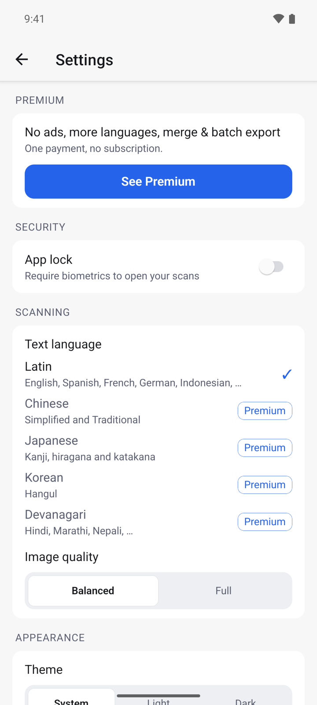

Was die App kann
OCRScanner fotografiert eine Papierseite, richtet sie gerade aus und liest den Text direkt auf Ihrem Smartphone. Sie können den Text bearbeiten und kopieren, alle Ihre Scans durchsuchen und einen Scan als durchsuchbares PDF, als Textdatei oder als Bild teilen.
- Die Texterkennung läuft auf Ihrem Gerät und funktioniert ohne Internet.
- Kein Konto nötig. Ihre Scans bleiben auf Ihrem Smartphone und werden nie hochgeladen.
- Importieren Sie ein PDF oder teilen Sie unter Android Bilder aus anderen Apps.
- Kostenlos mit Werbung. Ein einmaliger Kauf von Premium entfernt die Werbung und bringt weitere Sprachen.
Erste Schritte
- Öffnen Sie OCRScanner. Die Liste Scans ist beim ersten Start leer.
- Tippen Sie auf Scan, um die Kamera zu nutzen, oder auf Import, um vorhandene Fotos auszuwählen.
- Erlauben Sie den Kamerazugriff, wenn Android danach fragt. Für den Import brauchen Sie keinen Zugriff auf Ihre ganze Fotomediathek.

Eine Seite scannen
- Tippen Sie auf Scan und richten Sie die Kamera auf die Seite. Tippen Sie auf den Auslöser, um das Foto aufzunehmen.
- Auf Review werden die Seitenränder automatisch erkannt. Ziehen Sie eine blaue Ecke, wenn ein Rand nicht stimmt, oder tippen Sie auf Full page, um das ganze Foto zu behalten.
- Wählen Sie einen Filter, um die Seite zu verbessern: Original, Magic, Gray oder B&W.
- Tippen Sie auf Rotate 90°, wenn die Seite quer liegt, oder auf Retake, um sie neu zu fotografieren.
- Tippen Sie auf Recognize text.

Um mehrere Seiten in einem Dokument zu scannen, öffnen Sie den Scan später, tippen auf ⋯ und wählen Add pages.
Ein PDF importieren
OCRScanner liest bis zu 20 Seiten eines PDFs, mit Premium bis zu 50. Jede Seite wird als Bild gelesen, vorhandener Text im PDF wird also nicht verwendet.
- Wählen Sie ein PDF in der Dateiauswahl Ihres Smartphones. Eine Speicherberechtigung ist nicht nötig.
- Prüfen Sie die Seiten auf Review. Ist das PDF länger als das Limit, zeigt Review an, wie viele Seiten ausgelassen wurden.
- Tippen Sie auf Recognize text.
Bilder aus anderen Apps teilen
Das funktioniert unter Android.
- Wählen Sie in Ihrer Galerie oder einer anderen App bis zu 20 Bilder aus und tippen Sie auf Teilen.
- Wählen Sie OCRScanner.
- Entsperren Sie die App, falls App lock aktiv ist. Die Bilder öffnen sich auf Review als neuer Scan.
Wenn noch ungespeicherte Seiten geöffnet sind, fragt die App nach, bevor sie diese ersetzt.
Text lesen, bearbeiten und kopieren
- Nach der Erkennung zeigt Result oben die Seite und darunter ihren Text.
- Tippen Sie auf eine Textzeile, um zu sehen, wo sie auf der Seite steht. Tippen Sie auf ein Wort auf der Seite, um zu seiner Zeile zu springen.
- Zeilen, bei denen sich die App unsicher ist, sind markiert. So sehen Sie, was Sie prüfen sollten.
- Tippen Sie auf Edit, um den Text zu korrigieren, auf Copy, um ihn zu kopieren, oder auf Share, um ihn zu senden.
- Tippen Sie auf Save, um den Scan in Ihrer Liste zu behalten.

Einen Scan über seinen Text finden
- Tippen Sie auf Scans auf Search text in your scans.
- Geben Sie ein Wort ein. Jeder Scan, der es enthält, wird aufgelistet, die Fundstelle ist fett hervorgehoben.
- Tippen Sie auf ein Ergebnis, um den Scan an dieser Stelle zu öffnen.

Um nur die Scans mit einem bestimmten Tag zu sehen, tippen Sie unter dem Suchfeld auf diesen Tag. Die Suche durchsucht dann nur diese Scans. Tippen Sie den Tag noch einmal an, um wieder alle Scans zu sehen.
Teilen oder exportieren
- Öffnen Sie einen Scan und tippen Sie auf die Teilen-Schaltfläche.
- Wählen Sie ein Format:
- PDF: die Seitenbilder mit durchsuchbarem Text dahinter.
- Text file: reiner Text (.txt).
- Page image: in Fotos speichern oder senden.
- Wählen Sie die App, an die Sie die Datei senden möchten.

Umbenennen, taggen und löschen
- Öffnen Sie einen Scan und tippen Sie auf ⋯.
- Wählen Sie Rename, um den Titel zu ändern, oder Edit tags, um Tags hinzuzufügen. Trennen Sie mehrere Tags mit Kommas.
- Wählen Sie Recognize text again, um die Seiten noch einmal in einer anderen Textsprache zu lesen. Von Ihnen bearbeiteter Text wird dabei ersetzt.
- Wählen Sie Delete scan, um den Scan von Ihrem Smartphone zu entfernen.
Scans sichern und wiederherstellen
- Tippen Sie auf Scans oben rechts auf das Einstellungssymbol.
- Tippen Sie unter Storage auf Back up scans. Alle Ihre Scans werden in einer Datei gebündelt.
- Wählen Sie, wo Sie die Datei speichern oder hin senden möchten. Die Datei ist nicht verschlüsselt, bewahren Sie sie daher an einem sicheren Ort auf.
- Tippen Sie auf einem neuen Smartphone auf Restore from backup und wählen Sie die Datei. Die App fragt nach, bevor sie alle Scans auf dem Smartphone durch die Scans aus der Sicherung ersetzt.
App sperren und Einstellungen ändern
- Tippen Sie auf Scans oben rechts auf das Einstellungssymbol.
- Schalten Sie App lock ein, damit vor dem Öffnen Ihrer Scans Fingerabdruck, Gesicht oder Bildschirmsperre verlangt wird.
- Wählen Sie unter Text language (OCR) die Schrift Ihrer Dokumente. Latin umfasst unter anderem Englisch, Spanisch, Französisch, Deutsch und Indonesisch. Die App schlägt die Schrift vor, die zur Sprache Ihres Smartphones passt.
- Tippen Sie auf App language, um die App in einer anderen Sprache als Ihr Smartphone zu nutzen.
- Wählen Sie Image quality (Balanced oder Full) und das Theme (System, Light oder Dark).

Premium
Premium ist eine einmalige Zahlung, kein Abo. Öffnen Sie Settings und tippen Sie auf See Premium. Premium bringt Ihnen:
- Keine Werbung.
- Chinesischen, japanischen und koreanischen Text sowie unter Android Hindi und andere Devanagari-Schrift.
- Das Zusammenführen mehrerer Scans in einem PDF oder einer Textdatei.
- Den Import längerer PDFs: bis zu 50 statt 20 Seiten.
Wenn Sie Premium schon früher gekauft haben, tippen Sie auf dem Premium-Bildschirm auf Restore purchase.
Fragen
Funktioniert die App offline? Ja. Scannen, Texterkennung, Suche und Export laufen alle auf Ihrem Smartphone.
Wo werden meine Scans gespeichert? Nur auf Ihrem Gerät. Wenn Sie die App deinstallieren, werden die Scans mit entfernt. Tippen Sie deshalb vorher in den Einstellungen auf Back up scans, um sie zu behalten.
Der Text enthält Fehler. Was kann ich tun? Nehmen Sie das Foto bei gutem Licht und mit flach liegender Seite noch einmal auf, probieren Sie den Filter Magic oder B&W und prüfen Sie, ob Text language (OCR) zum Dokument passt. Einzelne Wörter können Sie mit Edit korrigieren.
Kann die App Handschrift lesen? Sie ist für gedruckten Text gemacht. Handschrift wird oft falsch gelesen.
Datenschutz
Ihre Dokumente werden nie hochgeladen. Die kostenlose Version zeigt Werbung von Google AdMob. Lesen Sie die vollständige Datenschutzerklärung.